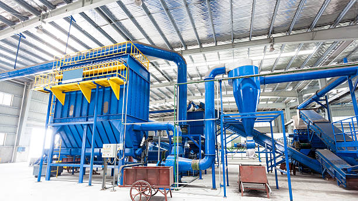

I’ve worked with other data science students in a real project hired by a local business. Myself and others, including 10-15 individuals, worked on a database and website for Clearview, a screen and window company. We used different coding languages, primarily python and SQLite for the database. For the website we used HTML and CSS. Overall, the project took a little more than a year of work from various students. In this data science society, I learned valuable skills in the field of coding. I also developed skills that helped me work alongside others in a team setting.
I’ve also worked for Johns Manville operating and managing machines and the factory floor. I made more than 15,000 dollars for this company during my time here through the product that I reprocessed. I gained technical knowledge and skills as I learned to operate different industrial-grade machines. Additionally, I developed creative solutions to problems for operating and fixing machines.
